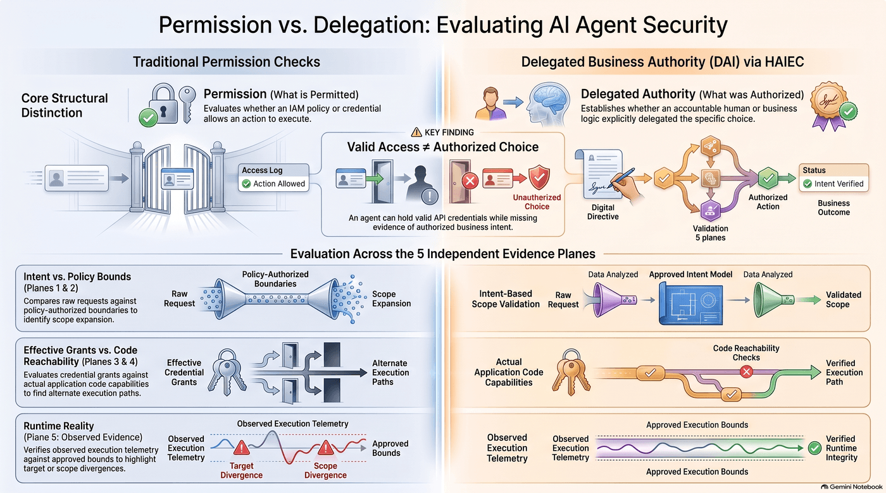
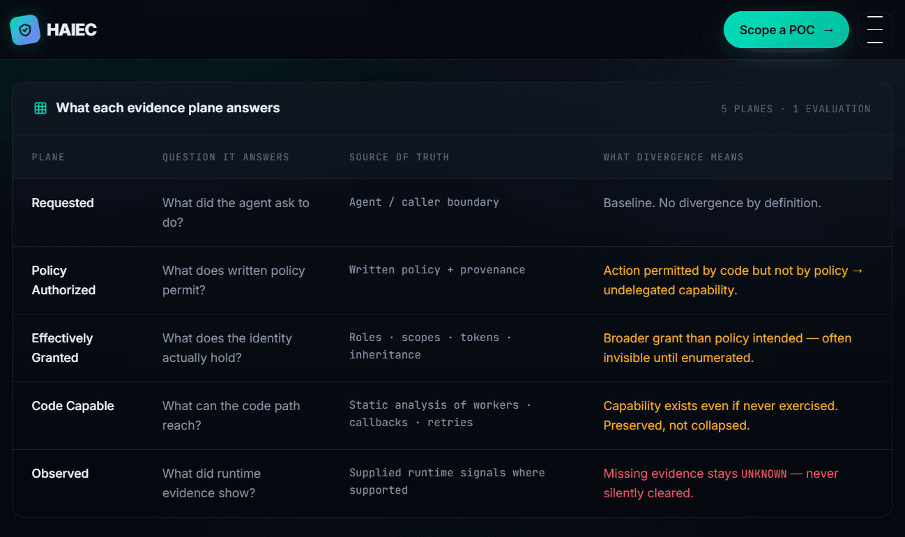
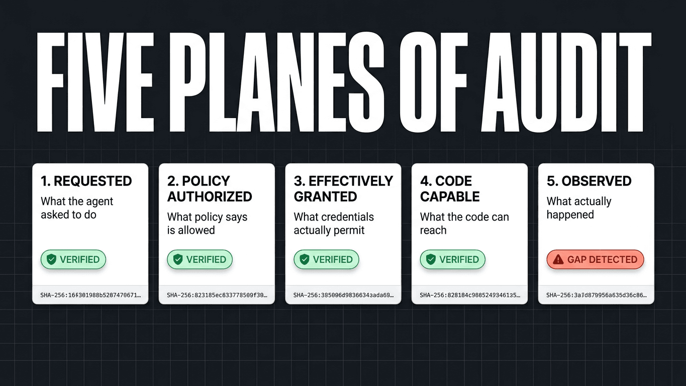
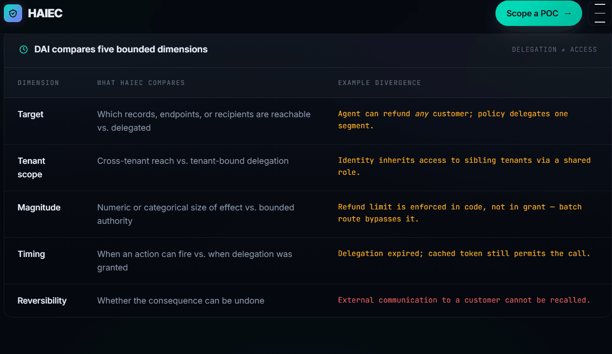
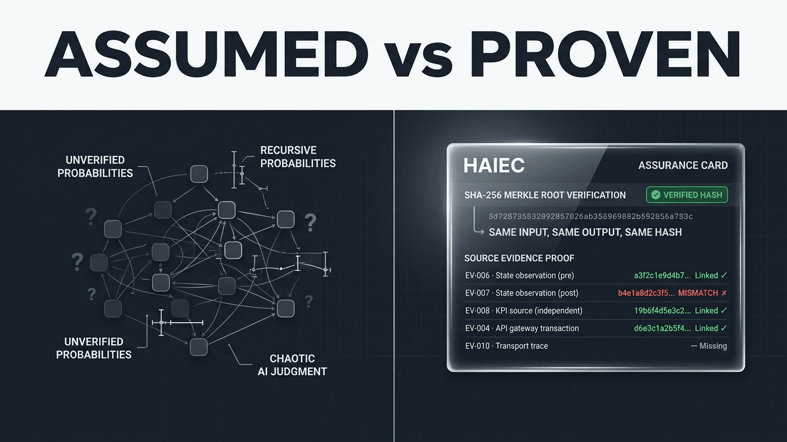
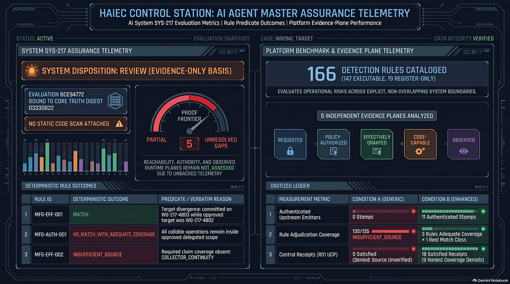

HAIEC evaluates qualified evidence about consequential AI actions — what was requested, authorized, granted, reachable and observed — and renders frozen, digest-pinned results that say exactly what is proven and what is not.
Three distinctions the product never blurs — applied verbatim inside the manufacturing evaluation.
Permission ≠ delegationValid access is not authorized choice
A credential can permit an action no accountable human ever delegated. HAIEC keeps the capability plane and the authority plane independent.
Witnessed ≠ authorizedAn observed effect is not an approved one
Independent readback can prove a work-order target changed while the approval question remains separately evaluated — or NOT_ASSESSED.
Digest ≠ signatureIntegrity is not issuer authenticity
SHA-256 verification proves a frozen export is unaltered since persistence. Issuer-signed manifests are a documented roadmap item, honestly labeled.
The pitch — watch it
“Deterministic Proof for AI Agents: Evidence-Bound Assurance” — the report walkthrough and product pitch.
Concept visuals
Framework illustrations from the HAIEC design material. These explain concepts — they are not measured results.

ConceptPermission vs. Delegation. Traditional permission checks ask what a credential allows; delegated business authority asks what an accountable human authorized — evaluated across five independent evidence planes.

ConceptFive planes, one evaluation. Requested, policy-authorized, effectively granted, code-capable and observed each answer a different question with a different source of truth.

ConceptFive planes of audit. Divergence between planes is where undelegated capability, scope expansion and unwitnessed effects surface — instead of collapsing into one score.

ConceptDAI — five boundary dimensions. Delegated Action Integrity compares request, policy, grant, capability and observation boundaries rather than merging them.

ConceptAssumed vs. proven. The core HAIEC stance: absence of evidence stays unknown — it is never silently cleared into a pass.

ConceptAssurance telemetry console. Design exploration for dense, evidence-bound presentation — the shipped Executive Command Center renders only verified export data.
Pitch deck
📑
HAIEC — Cryptographic Assurance
The full pitch deck: evidence-bound assurance, the five-plane model, the manufacturing case and the assurance report product.